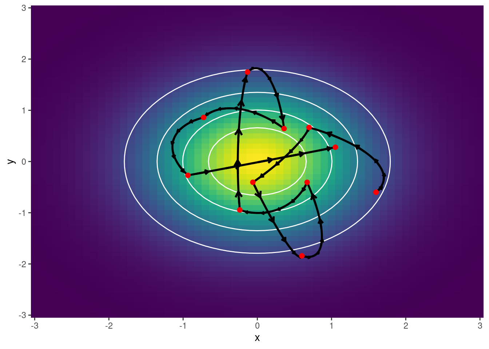
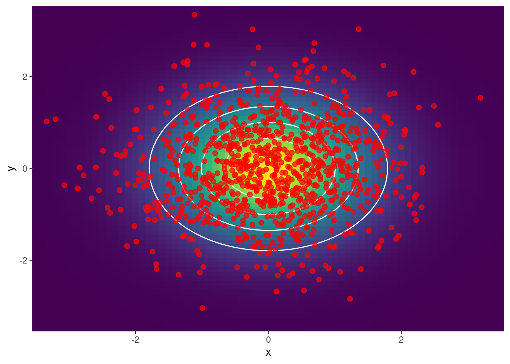
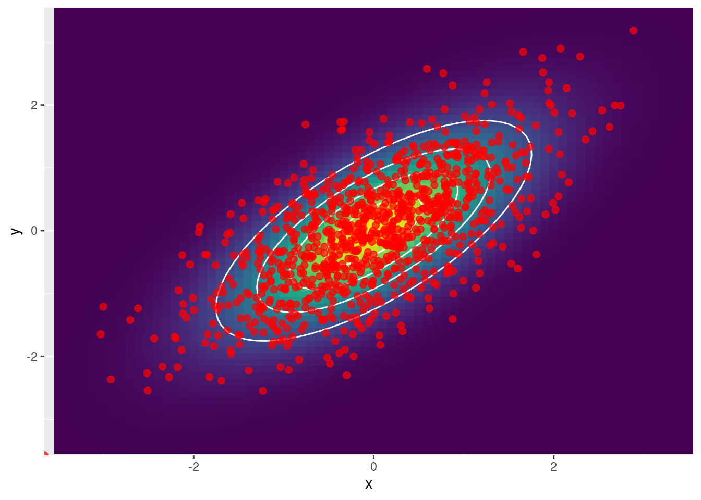

library(ggplot2)
library(ggquiver)
library(mvtnorm)
set.seed(12345)
# ~~~~~~~~~~~~~~~~~~~~~~~~~~~~~~~~~~~~~~~~~~~~~~~~~~~~~~~~~~~~~~~~~~~~~~~~~~~~~
# Funciones auxiliares
# ~~~~~~~~~~~~~~~~~~~~~~~~~~~~~~~~~~~~~~~~~~~~~~~~~~~~~~~~~~~~~~~~~~~~~~~~~~~~~
dlogpdx <- function(x, y, rho) {
- (x - rho * y) / (1 - rho ^ 2)
}
dlogpdy <- function(x, y, rho) {
- (y - rho * x) / (1 - rho ^ 2)
}
dlogp <- function(q, rho) {
x <- q[1]
y <- q[2]
c(dlogpdx(x, y, rho), dlogpdy(x, y, rho))
}
make_neg_dlogp <- function(rho) {
function(q) -dlogp(q, rho)
}
make_neg_logp <- function(rho) {
Mu <- rep(0, 2)
Sigma <- diag(2)
Sigma[Sigma == 0] <- rho
function(q) -dmvnorm(q, Mu, Sigma, log = TRUE)
}
leapfrog <- function(p, q, neg_dlogp, path_length, step_size) {
leap_q <- list()
leap_p <- list()
p <- p - step_size * neg_dlogp(q) / 2
for (i in seq_len(round(path_length / step_size) - 1)) {
q <- q + step_size * p
p <- p - step_size * neg_dlogp(q)
leap_q[[i]] <- q
leap_p[[i]] <- p
}
q <- q + step_size * p
p <- p - step_size * neg_dlogp(q) / 2
# Flip del momentum
return(list(q = q, p = -p, leap_q = leap_q, leap_p = leap_p))
}
lappend <- function(l, object) {
l[[length(l) + 1]] <- object
l
}
ltail <- function(l) {
l[[length(l)]]
}
hmc <- function(
neg_logp,
neg_dlogp,
n_samples,
initial_position,
path_length = 1,
step_size = 0.01
) {
leap_p <- list()
leap_q <- list()
samples <- list(initial_position)
n_dimensions <- length(initial_position)
# Se generan momentums a partir de una MVN(0, 1)
# Es de dimension (n_samples, n_dimensions)
momentum <- rmvnorm(n_samples, rep(0, n_dimensions), diag(n_dimensions))
for (i in seq_len(n_samples)) {
# Obtener posicion y momentum
p_current <- momentum[i, ]
q_current <- ltail(samples)
# Integrar para obtener una nueva posición y momentum
integration <- leapfrog(
p_current, q_current, neg_dlogp, path_length, step_size
)
p_new <- integration$p
q_new <- integration$q
leap_p <- lappend(leap_p, integration$leap_p)
leap_q <- lappend(leap_q, integration$leap_q)
# Criterio de aceptacion de Metropolis
current_logp <- neg_logp(q_current) - dmvnorm(p_current, log = TRUE)
new_logp <- neg_logp(q_new) - dmvnorm(p_new, log = TRUE)
sample_new <- if(log(runif(1)) < current_logp - new_logp) {
q_new
} else {
sample_current
}
samples <- lappend(samples, sample_new)
}
samples <- as.data.frame(do.call(rbind, samples))
leap_p <- as.data.frame(do.call(rbind, lapply(leap_p, function(x) do.call(rbind, x))))
leap_q <- as.data.frame(do.call(rbind, lapply(leap_q, function(x) do.call(rbind, x))))
colnames(samples) <- c("x", "y")
colnames(leap_p) <- c("p0", "p1")
colnames(leap_q) <- c("q0", "q1")
list(samples = samples, leap_p = leap_p, leap_q = leap_q)
}
# ~~~~~~~~~~~~~~~~~~~~~~~~~~~~~~~~~~~~~~~~~~~~~~~~~~~~~~~~~~~~~~~~~~~~~~~~~~~~~
# Primer caso: Graficar trayectorias
# ~~~~~~~~~~~~~~~~~~~~~~~~~~~~~~~~~~~~~~~~~~~~~~~~~~~~~~~~~~~~~~~~~~~~~~~~~~~~~
neg_logp <- make_neg_logp(0)
neg_dlogp <- make_neg_dlogp(0)
initial_position <- c(1.6, -0.6)
hmc_output <- hmc(neg_logp, neg_dlogp, 10, initial_position, 1.5, 0.01)
df_samples <- hmc_output$samples
df_leap_p <- hmc_output$leap_p
df_leap_q <- hmc_output$leap_q
df_leap <- cbind(df_leap_p, df_leap_q)
df_basis <- tidyr::crossing(x1 = seq(-3, 3, 0.1), x2 = seq(-3, 3, 0.1))
plt <- df_basis |>
dplyr::mutate(f = mvtnorm::dmvnorm(df_basis, c(0, 0), diag(2))) |>
ggplot() +
geom_raster(aes(x = x1, y = x2, fill = f)) +
stat_contour(aes(x = x1, y = x2, z = f), col = "white", bins = 5) +
viridis::scale_fill_viridis() +
theme(
legend.position = "none",
plot.title = element_text(hjust = 0.5, size = 18)
)
plt +
geom_path(aes(x = q0, y = q1), linewidth = 1, data = df_leap) +
geom_quiver(
aes(x = q0, y = q1, u = p0, v = p1),
linewidth = 1,
vecsize = 600,
data = df_leap[seq(1, nrow(df_leap), by = 30), ]
) +
geom_point(
aes(x = x, y = y),
color = "red",
size = 2,
data = df_samples
) +
labs(x = "x", y = "y") +
scale_x_continuous(expand = c(0, 0)) +
scale_y_continuous(expand = c(0, 0))
# ~~~~~~~~~~~~~~~~~~~~~~~~~~~~~~~~~~~~~~~~~~~~~~~~~~~~~~~~~~~~~~~~~~~~~~~~~~~~~
# Segundo caso: Obtencion de muestras
# ~~~~~~~~~~~~~~~~~~~~~~~~~~~~~~~~~~~~~~~~~~~~~~~~~~~~~~~~~~~~~~~~~~~~~~~~~~~~~
neg_logp <- make_neg_logp(0)
neg_dlogp <- make_neg_dlogp(0)
initial_position <- c(1.6, -0.6)
hmc_output <- hmc(neg_logp, neg_dlogp, 1000, initial_position, 1.5, 0.01)
df_samples <- hmc_output$samples
df_leap_p <- hmc_output$leap_p
df_leap_q <- hmc_output$leap_q
df_basis <- tidyr::crossing(x1 = seq(-3.5, 3.5, 0.1), x2 = seq(-3.5, 3.5, 0.1))
plt <- df_basis |>
dplyr::mutate(f = mvtnorm::dmvnorm(df_basis, c(0, 0), diag(2))) |>
ggplot() +
geom_raster(aes(x = x1, y = x2, fill = f)) +
stat_contour(aes(x = x1, y = x2, z = f), col = "white", bins = 5) +
viridis::scale_fill_viridis() +
theme(
legend.position = "none",
plot.title = element_text(hjust = 0.5, size = 18)
)
plt +
geom_point(
aes(x = x, y = y),
size = 2,
alpha = 0.7,
color = "red",
data = df_samples
) +
labs(x = "x", y = "y") +
scale_x_continuous(expand = c(0, 0)) +
scale_y_continuous(expand = c(0, 0))
# ~~~~~~~~~~~~~~~~~~~~~~~~~~~~~~~~~~~~~~~~~~~~~~~~~~~~~~~~~~~~~~~~~~~~~~~~~~~~~
# Tercer caso: rho = 0.6
# ~~~~~~~~~~~~~~~~~~~~~~~~~~~~~~~~~~~~~~~~~~~~~~~~~~~~~~~~~~~~~~~~~~~~~~~~~~~~~
neg_logp <- make_neg_logp(0.7)
neg_dlogp <- make_neg_dlogp(0.7)
initial_position <- c(1.6, -0.6)
hmc_output <- hmc(neg_logp, neg_dlogp, 1000, initial_position, 1.5, 0.01)
df_samples <- hmc_output$samples
df_leap_p <- hmc_output$leap_p
df_leap_q <- hmc_output$leap_q
Sigma <- matrix(c(1, 0.7, 0.7, 1), ncol = 2)
df_basis <- tidyr::crossing(x1 = seq(-3.5, 3.5, 0.1), x2 = seq(-3.5, 3.5, 0.1))
plt <- df_basis |>
dplyr::mutate(f = mvtnorm::dmvnorm(df_basis, c(0, 0), Sigma)) |>
ggplot() +
geom_raster(aes(x = x1, y = x2, fill = f)) +
stat_contour(aes(x = x1, y = x2, z = f), col = "white", bins = 5) +
viridis::scale_fill_viridis() +
theme(
legend.position = "none",
plot.title = element_text(hjust = 0.5, size = 18)
)
plt +
geom_point(
aes(x = x, y = y),
size = 2,
alpha = 0.7,
color = "red",
data = df_samples
) +
labs(x = "x", y = "y") +
scale_x_continuous(expand = c(0, 0)) +
scale_y_continuous(expand = c(0, 0))
cor(df_samples$x, df_samples$y)[1] 0.6584974